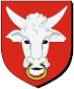

Antavla
46949 Anna Pedersdotter (Rommel)
Blev minst 27 år.

Far:
Peder Steffensen Romel (1430? - 1515)
Mor:
Kristina Björnsdotter (Krumme) (<1490 - >1515)
Född:
1505 Halland (N).
Död:
efter 1532 Olsnäs, Stenkyrka, Tjörn (O).
Barn med
46948 Knud Jensen Jude till Arlöse (Månesköld af Norge) (1500? - 1567)
Barn:
Jörgen Knudsen Månesköld till Dalshult, Halland (- 1565)
Personhistoria
Årtal
Ålder
Händelse
1505
Födelse 1505 Halland (N)
1515
Fadern
93898 Peder Steffensen Romel
dör 1515-07-29
>1515
Modern
93899 Kristina Björnsdotter (Krumme)
dör efter 1515 Fyllinge, Snöstorp (N)
>1532
Död efter 1532 Olsnäs, Stenkyrka, Tjörn (O)